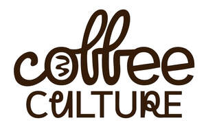

Trade Mark Journal No.2026/012 20 March 2026
UK00004350692 7 March 2026 (41)

- Class 41
- Hosting of entertainment events; Organization of entertainment events; Organisation of entertainment events; Conducting of entertainment events; Entertainment services in the nature of sporting events; Entertainment services in the nature of organizing social entertainment events; Organisation of entertainment and cultural events; Presentation of live entertainment events; Entertainment services in the nature of arranging social entertainment events; Production of live entertainment events; Entertainment services relating to sporting events; Organising events for entertainment purposes; Conducting of live entertainment events; Organisation of events for cultural, entertainment and sporting purposes; Entertainment; Entertainment, sporting and cultural activities; Arranging and conducting of live entertainment events; Arranging and conducting of entertainment events; Organization of entertainment competitions; Dance events; Arranging and conducting of live entertainment events for charitable purposes; Organising of entertainment competitions; Organising of competitions for entertainment; Competitions (Organising of entertainment -); Music entertainment services; Entertainment services relating to competitions; Organisation of outings for entertainment; Entertainment services; Artistic management of entertainment venues; Entertainment services in the nature of contests; Festivals (Organisation of -) for entertainment purposes; Organising of entertainment; Services for the organisation of sports events; Management of events for sporting clubs; Conducting of sports events; Organisation of entertainment competitions; Organising of sports competitions and events; Musical entertainment services; Entertainment in the nature of television news shows; Arranging of festivals for entertainment purposes; Organizing cultural and arts events; Entertainment services in the form of concert performances; Organization of sporting events; Entertainment services in the form of cinema performances; Entertainment services in the nature of live performances of roller skating exhibitions and competitions; Conducting of live sports events; Arranging of sporting events; Cabaret entertainment services; Entertainment information; Information (Entertainment -); Providing facilities for sports events; Organisation of sporting competitions and sports events; Organising of sports and sports events; Television entertainment services; Organizing community sporting and cultural events; Education, entertainment and sports; Interactive entertainment services; Organisation of conferences related to entertainment; Organising of sports competitions and sports events; Organising of sports events and of sports competitions; Live entertainment services; Organising community sporting events; Interactive entertainment; Musical entertainment; Entertainment in the nature of dance performances; Nightclub services [entertainment]; Corporate entertainment services; Organization of fashion parades for entertainment purposes; Organising of exhibitions for entertainment purposes; Organising of sporting events; Organising sporting events; Entertainment club services; Club entertainment services; Club services [entertainment]; Organising of recreational events; Arranging of cultural events; Arranging of competitions for education or entertainment; Live entertainment; Competitions (Organization of -) [education or entertainment]; Organization of competitions for education or entertainment; Organising of shows for entertainment purposes; Arranging of educational events; Organization of dancing events; Arranging and conducting of entertainment events for charitable fundraising purposes; Conducting of entertainment activities; Tv entertainment services; Organisation of sporting events; Presentation of live entertainment performances; Ticket reservation and booking services for entertainment events.
COFFEE CULTURE LONDON LTD